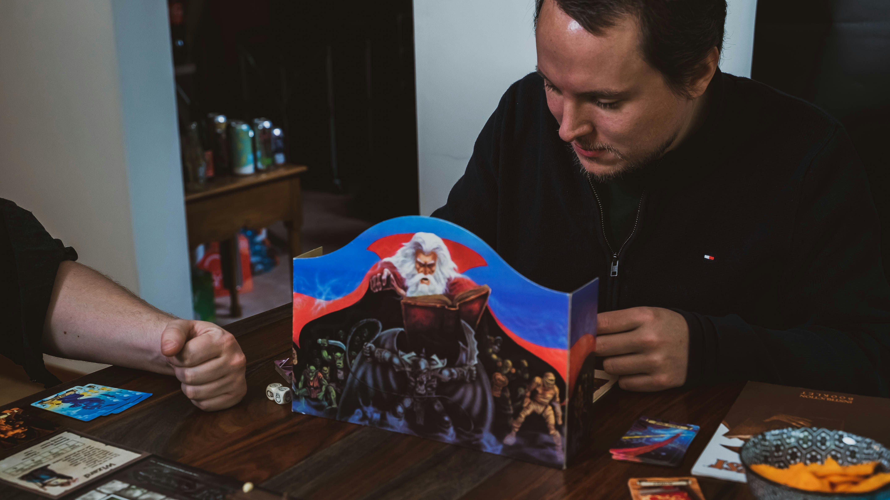
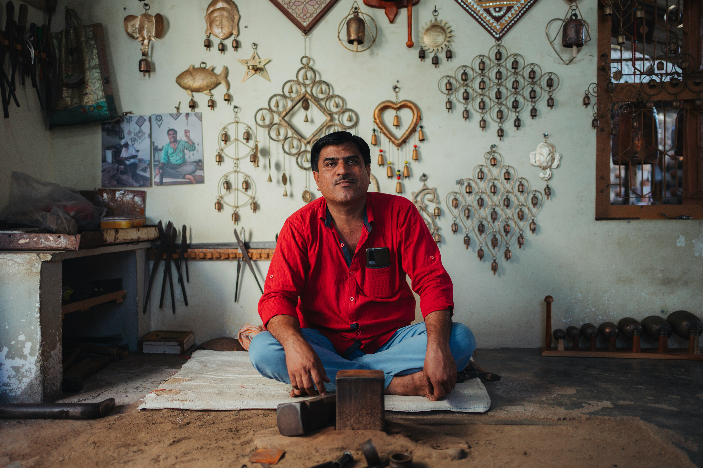
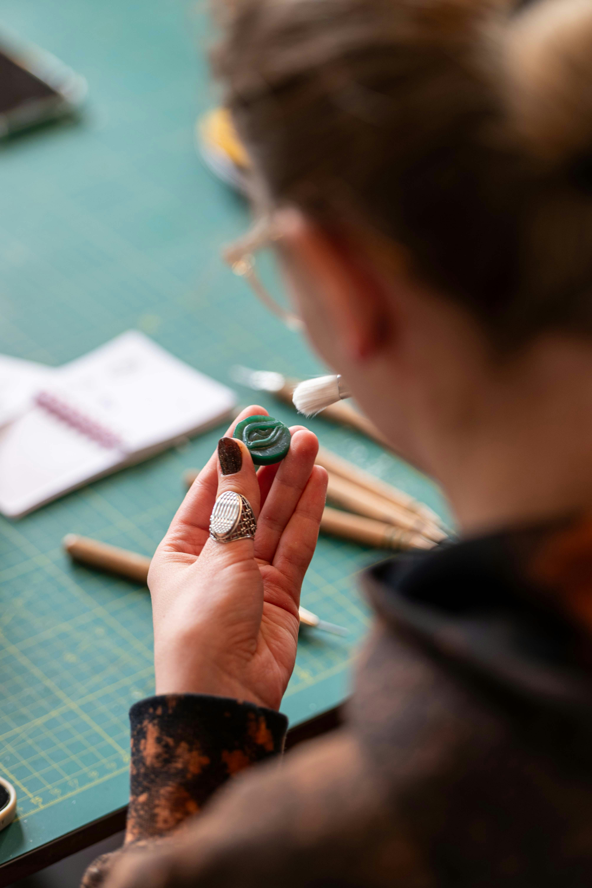
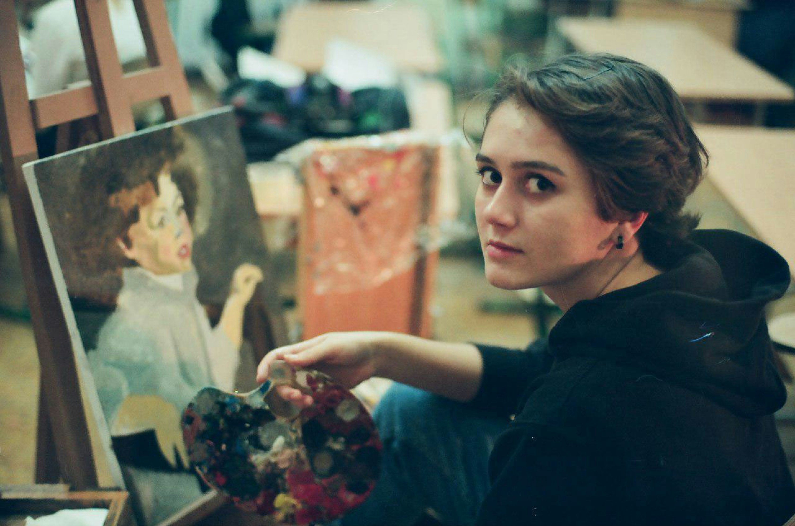

Gerardo Carrera
Ebanista
Especialista en realizar juegos de mesa artesanales.

Ebanista
Especialista en realizar juegos de mesa artesanales.

Tejedora artesanal
Diseña piezas textiles sostenibles inspiradas en la naturaleza y la tradición cultural.

Pintora muralista
Crea murales colectivos inspirados en la naturaleza y la identidad local.

Creador de composiciones colgantes
Diseña piezas decorativas colgantes en madera y metal para interiores y exteriores.

Creadora de pines artesanales
Diseña pines decorativos hechos a mano inspirados en formas naturales y simbólicas.

Pintora
Crea obras pictóricas inspiradas en la naturaleza y la vida cotidiana.